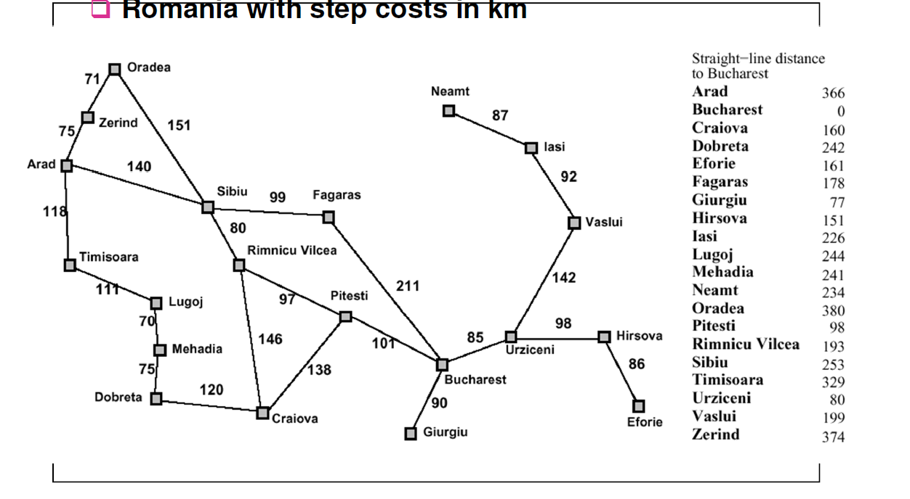

What's the difference between best-first search and A* search?
In my text book I noticed that both these algorithms work almost exactly the same, I am trying to understand what's the major difference between them.

The textbook traversed this example using A* the same way it did with best- first search.
Any help would be appreciated.
Answer
Best-first search algorithm visits next state based on heuristics function f(n) = h with lowest heuristic value (often called greedy). It doesn't consider cost of the path to that particular state. All it cares about is that which next state from the current state has lowest heuristics.
A* search algorithm visits next state based on heristics f(n) = h + g where h component is same heuristics applied as in Best-first search but g component is path from the initial state to the particular state. Therefore it doesn't chooses next state only with lowest heuristics value but one that gives lowest value when considering it's heuristics and cost of getting to that state.
In your example above when you start from Arad you can go either straight to Sibiu (253km) or to the Zerind(374km) or Timisoara(329km). In this case both algorithms choose Sibiu as it has lower value f(n) = 253.
Now you can expand to either state back to Arad(366km) or Oradea(380km) or Faragas(178km) or Rimnicu Vilcea(193km). For best first search Faragas will have lowest f(n) = 178 but A* will have Rimnicu Vilcea f(n) = 220 + 193 = 413 where 220 is cost of getting to Rimnicu from Arad (140+80) and 193 is from Rimnicu to Bucharest but for Faragas it will be more as f(n) = 239 + 178 = 417.
So now clearly you can see best-first is greedy algorithm because it would choose state with lower heuristics but higher overall cost as it doesn't consider cost of getting to that state from initial state
Suggest
A achieves better performance by using heuristics to guide its search. A combines the advantages of Best-first Search and Uniform Cost Search: ensure to find the optimized path while increasing the algorithm efficiency using heuristics. A function would be f(n) = g(n) + h(n) with h(n) being the estimated distance between any random vertex n and target vertex, g(n) being the actual distance between the start point and any vertex n. If g(n)=0, the A turns to be Best-First Search. If h(n)=0, then A* turns to be Uniform-Cost Search.